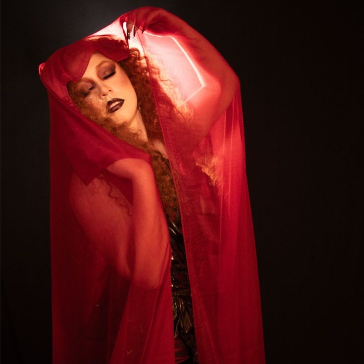

Letra
Caro mio
Non mi scuso
Sono dell'arte
Vivo per lei
Visto minha farsa
Te apresento a minha graça
Percorro nomes, vilanias e desgraças
Quanto azar seu me conhecer
Eu sempre faço pagar
Aqui nada é de graça
Senhoras e com dores
Apresento-lhes o meu pior de tudo
Eu quero pegar fogo
Senhoras e senhores
Ninguém vai sorrir sozinho
Eu vou com tudo
Eu quero pegar fogo
Caro mio
Non mi scuso
Sono dell’arte
Vivo per
Caro mio
Non mi scuso
Sono dell’arte
Vivo per lei
Imagem ilustrativa
